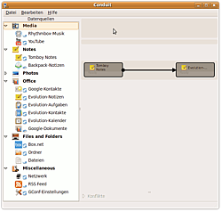

Conduit
Dieser Artikel wurde für die folgenden Ubuntu-Versionen getestet:
Ubuntu 14.04 Trusty Tahr
Zum Verständnis dieses Artikels sind folgende Seiten hilfreich:
Conduit  dient zum Abgleichen bzw. Synchronisieren von Informationen und Daten zwischen Computern, Cloud-Diensten wie z.B. Dropbox und anderen elektronischen Geräten wie PDAs, Mobiltelefonen etc.
dient zum Abgleichen bzw. Synchronisieren von Informationen und Daten zwischen Computern, Cloud-Diensten wie z.B. Dropbox und anderen elektronischen Geräten wie PDAs, Mobiltelefonen etc.
Conduit kümmert sich neben der Synchronisation auch um die Konvertierung in andere Formate. Zum Beispiel macht Conduit die Synchronisation mit anderen Computern möglich für:
PIM Daten mit anderen Mobiltelefonen, iPods, Nokia Internet Geräten oder zwischen Computern zu synchronisieren
Photos auf Flickr
, PicasaWeb , Zoto , SmugMug , ShutterFly , Facebook  oder einen iPod hochzuladen
oder einen iPod hochzuladen Photos unter F-Spot abzugleichen
Musikdateien und Playlisten mit Rhythmbox
Daten und Dateien mit YouTube
, Box.netAlle Daten von Evolution
Hintergrundbilder
Ordner und Verzeichnisse
und vieles mehr...
Hinweis:
Die letzte Codeänderung stammt vom 22.02.2009. Das Projekt scheint nicht mehr weiter fortgeführt zu werden.
|  |
| Programmfenster |
Installation¶
Folgende Pakete müssen für GNOME installiert [1] werden:
conduit (universe)
 mit apturl
mit apturl
Paketliste zum Kopieren:
sudo apt-get install conduit
sudo aptitude install conduit
Für KDE bzw. Kubuntu muss zusätzlich das Paket
gnome-pilot-conduits
mit apturl
Paketliste zum Kopieren:
sudo apt-get install gnome-pilot-conduits
sudo aptitude install gnome-pilot-conduits
installiert werden.
Benutzung/Konfiguration¶
Nach erfolgreicher Installation wird das Programm unter "Anwendungen -> Zubehör" gestartet [2].
Unter "File" finden sich Möglichkeiten, die Synchronisation zu starten und zu unterbrechen sowie seine Einstellungen zu speichern. Nützlich ist besonders der Punkt "Beispiele", aus denen man nur noch die Konfigurationen ändern muss und sofort loslegen kann.
Unter "Edit" könnte man einige Einstellungen vornehmen, z.B., ob das Programm automatisch starten soll oder nicht; "alles löschen" geht hier auch.
Unter "Help" kann neben der Versionsinfo eine Online-Hilfe aufgerufen werden, die allerdings momentan noch sehr instabil ist.
Als Datenquellen ("Data Providers") stehen zur Verfügung links in einer Auswahlliste:
Photos für verschiedene Anwendungen (s.o.)
Office mit Kontakten, Aufgaben, Kalender, Notizen für Evolution, Kontakte und Dokumente für Google
Daten und Verzeichnisse "Files and Folders" für Boxnet sowie frei konfigurierbar
Sonstiges "Miscellaneus" u.a. für Hintergrundbilder oder RSS-Feeds
Aus dieser Liste kann man die Synchronisationsaufgaben mit der Maus direkt nach rechts in das Arbeitsfeld ziehen, dort konfigurieren und über "File -> Synchronize all" den Abgleich erstellen lassen.
Möchte man mehr graphisch arbeiten, kann man aus der Liste einen Ordner nach rechts ziehen und als "Ziel" neben einer Synchronisationsaufgabe als "Quelle" positionieren. Dabei werden "Quelle" und "Ziel" mit einem Pfeil nach rechts gerichtet verbunden, was die Synchronisationsrichtung anzeigt.
Mit  -Klick auf diesen Pfeil kann auf bidirektionalen Abgleich "Synchronisation Options -> Two Way" umgestellt werden.
-Klick auf diesen Pfeil kann auf bidirektionalen Abgleich "Synchronisation Options -> Two Way" umgestellt werden.
Nutzungshinweise¶
Im Forum wurde verschiedentlich empfohlen, den automatischen Start des Programms nicht zu nutzen, damit man bessere Kontrolle über die Synchronisationsvorgänge habe.
Benutzte Programme sollten vor Start des Abgleichs laufen, also aufgerufen sein.
Synchronisation Handy¶
Wenn das Mobiltelephon angesprochen werden kann, sei es per USB, sei es per Bluetooth, kann es "Ziel" oder "Quelle" für den Datenabgleich mittels Conduit werden. Dabei kann es hilfreich sein, nicht "Ordner", sondern "Dateien" abzugleichen.
Notizen Tomboy Evolution¶
Tomboy Notes aus "Notes" ins Arbeitsfeld ziehen, Evolution-Notizen aus "Office" danebensetzen, ggf. mit auf den Verbindungspfeil auf "Two-Way" stellen oder "Always up to date".
Links¶
Synchronisation 2.0 - Datenaustausch
- EasyLinux, 03/2010Der Klassiker: Unison - der Nachwuchs: Conduit
- Linux-Magazin, 01/2008Sync Tool for GNOME - Conduit - Ubuntu 9.10
- Video auf YouTube
- Erstellt mit Inyoka
-
 2004 – 2017 ubuntuusers.de • Einige Rechte vorbehalten
2004 – 2017 ubuntuusers.de • Einige Rechte vorbehalten
Lizenz • Kontakt • Datenschutz • Impressum • Serverstatus -
Serverhousing gespendet von